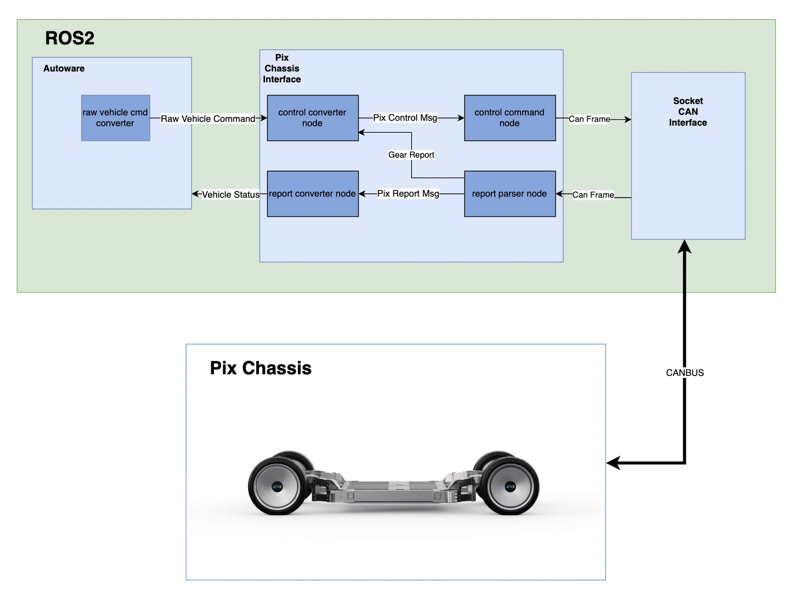

Pix Chassis Interface
Overview
Pixmoving chassis are driving-by-wire/DbW chassis, which are compatible with self-driving systems. We had designed an interface for Autoware.universe.
Notice
For the source code, please refer to pix_driver.
Before you can use the interface, make sure you have already installed and launched ros2_socketcan in your workspace.
Role
There are three main functions for Pix Chasssis Interface:
- Translation between CAN frames and pix_hooke_driver_msgs
- Conversion of Autoware commands to pix_hooke_driver_msgs
- Conversion of vehicle status in pix_hooke_driver_msgs to Autoware messages
Software Design

Control Command Node
Input
The input to Control Command Node
| Input | Topic(Data Type) | Explanation |
|---|---|---|
| autonomous driving to vehicle drive control | /pix_hooke/a2v_drivectrl_130(pix_hooke_driver_msgs/msg/A2vDriveCtrl) |
A2vDriveCtrl |
| autonomous driving to vehicle brake control | /pix_hooke/a2v_brakectrl_131(pix_hooke_driver_msgs/msg/A2vBrakeCtrl) |
A2vBrakeCtrl |
| autonomous driving to vehicle steering control | /pix_hooke/a2v_steerctrl_132(pix_hooke_driver_msgs/msg/A2vSteerCtrl) |
A2vSteerCtrl |
| autonomous driving to vehicle control | /pix_hooke/a2v_vehiclectrl_133(pix_hooke_driver_msgs/msg/A2vVehicleCtrl) |
A2vVehicleCtrl |
| autonomous driving to vehicle motor control | /pix_hooke/a2v_wheelctrl_135(pix_hooke_driver_msgs/msg/A2vWheelCtrl) |
A2vWheelCtrl |
A2vDriveCtrl
The detailed contents in A2vDriveCtrl(self-driving to vehicle drive control) are as follows.
| Content | Data Type | Explanation |
|---|---|---|
| header | std_msgs/Header | header |
| acu_chassis_driver_en_ctrl | std_msgs/int8 | enable/disable longitudinal acceleration contrl {0: 'ACU_CHASSISDRIVERENCTRL_DISABLE', 1: 'ACU_CHASSISDRIVERENCTRL_ENABLE'} |
| acu_chassis_driver_mode_ctrl | std_msgs/int8 | target control mode {0: 'ACU_CHASSISDRIVERMODECTRL_SPEED_CTRL_MODE', 1: 'ACU_CHASSISDRIVERMODECTRL_THROTTLE_CTRL_MODE', 2: 'ACU_CHASSISDRIVERMODECTRL_RESERVE', 3: 'ACU_CHASSISDRIVERMODECTRL_RESERVE'} |
| acu_chassis_gear_ctrl | std_msgs/int8 | target gear {0: 'ACU_CHASSISGEARCTRL_DEFAULT_N', 1: 'ACU_CHASSISGEARCTRL_D', 2: 'ACU_CHASSISGEARCTRL_N', 3: 'ACU_CHASSISGEARCTRL_R'} |
| acu_chassis_speed_ctrl | std_msgs/float32 | Target velocity [m/s] |
| acu_chassis_throttle_pdl_target | std_msgs/float32 | target accel pedal value 0.0-100.0 |
A2vBrakeCtrl
The detailed contents in A2vBrakeCtrl(self-driving to vehicle brake control) are as follows.
| Content | Data Type | Explanation |
|---|---|---|
| header | std_msgs/Header | header |
| acu_chassis_brake_en | std_msgs/int8 | enable/disable longitudinal deacceleration contrl 0: 'ACU_CHASSISBRAKEEN_DISABLE', 1: 'ACU_CHASSISBRAKEEN_ENABLE' |
| acu_chassis_aeb_ctrl | std_msgs/int8 | enable/disable AEB 0: 'ACU_CHASSISAEBCTRL_DISABLE', 1: 'ACU_CHASSISAEBCTRL_ENABLE' |
| acu_chassis_brake_pdl_target | std_msgs/float32 | target brake pedal value 0.0-100.0 |
| acu_chassis_epb_ctrl | std_msgs/int8 | parking brake control 0: 'ACU_CHASSISEPBCTRL_DEFAULT', 1: 'ACU_CHASSISEPBCTRL_BRAKE', 2: 'ACU_CHASSISEPBCTRL_RELEASE' |
A2vSteerCtrl
The detailed contents in A2vSteerCtrl(self-driving to vehicle steering control) are as follows.
| Content | Data Type | Explanation |
|---|---|---|
| header | std_msgs/Header | header |
| acu_chassis_steer_en_ctrl | std_msgs/int8 | enable/disable lateral/steering contrl {0: 'ACU_CHASSISSTEERENCTRL_DISABLE', 1: 'ACU_CHASSISSTEERENCTRL_ENABLE'} |
| acu_chassis_steer_mode_ctrl | std_msgs/int8 | steering mode {0: 'ACU_CHASSISSTEERMODECTRL_FRONT_ACKERMAN', 1: 'ACU_CHASSISSTEERMODECTRL_SAME_FRONT_AND_BACK', 2: 'ACU_CHASSISSTEERMODECTRL_FRONT_DIFFERENT_BACK', 3: 'ACU_CHASSISSTEERMODECTRL_BACK_ACKRMAN', 4: 'ACU_CHASSISSTEERMODECTRL_FRONT_BACK'} |
| acu_chassis_steer_angle_target | std_msgs/int32 | target steering angle, -500=500 left to right. When ACU_ChassisSteerModeCtrl=ACU_CHASSISSTEERMODECTRL_FRONT_BACK, ACU_ChassisSteerAngleTarget can only control front wheels |
| acu_chassis_steer_angle_rear_target | std_msgs/int32 | target rear steering angle. -500-500. Works only when ACU_ChassisSteerModeCtrl=ACU_CHASSISSTEERMODECTRL_FRONT_BACK |
| acu_chassis_steer_angle_speed_ctrl | std_msgs/float32 | target steering speed 0-500 |
A2vVehicleCtrl
The detailed contents in A2vVehicleCtrl(self-driving to vehicle Vehicle Control) are as follows.
| Content | Data Type | Explanation |
|---|---|---|
| header | std_msgs/Header | header |
| acu_vehicle_pos_lamp_ctrl | std_msgs/int8 | positioning lamp contorl {0: 'ACU_VEHICLEPOSLAMPCTRL_OFF', 1: 'ACU_VEHICLEPOSLAMPCTRL_ON'} |
| acu_vehicle_head_lamp_ctrl | std_msgs/int8 | head lamp control {0: 'ACU_VEHICLEHEADLAMPCTRL_OFF', 1: 'ACU_VEHICLEHEADLAMPCTRL_ON'} |
| acu_vehicle_left_lamp_ctrl | std_msgs/int8 | left lamp control {0: 'ACU_VEHICLELEFTLAMPCTRL_OFF', 1: 'ACU_VEHICLELEFTLAMPCTRL_ON'} |
| acu_vehicle_right_lamp_ctrl | std_msgs/int8 | right lamp control {0: 'ACU_VEHICLERIGHTLAMPCTRL_OFF', 1: 'ACU_VEHICLERIGHTLAMPCTRL_ON'} |
| acu_vehicl_high_beam_ctrl | std_msgs/int8 | vehicle high beam control {0: 'ACU_VEHICLEHIGHBEAMCTRL_OFF', 1: 'ACU_VEHICLEHIGHBEAMCTRL_ON'} |
| acu_vehicle_fog_lamp_ctrl | std_msgs/int8 | fog lamp control {0: 'ACU_VEHICLEFOGLAMPCTRL_OFF', 1: 'ACU_VEHICLEFOGLAMPCTRL_ON'} |
| acu_vehicle_body_light_crtl | std_msgs/int8 | body light control {0: 'ACU_VEHICLEBODYLIGHTCTRL_OFF', 1: 'ACU_VEHICLEBODYLIGHTCTRL_ON'} |
| acu_vehicle_read_light_crtl | std_msgs/int8 | reading light control (reserved) {0: 'ACU_VEHICLEREADLIGHTCTRL_OFF', 1: 'ACU_VEHICLEREADLIGHTCTRL_ON'} |
| acu_vehicle_voice | std_msgs/int8 | vehicle voice control (reserved) {0: 'ACU_VEHICLEVOICE_OFF', 1: 'ACU_VEHICLEVOICE_TURN_LEFT', 2: 'ACU_VEHICLEVOICE_TURN_RIGHT', 3: 'ACU_VEHICLEVOICE_BACKWARD'} |
| acu_vehicle_wipers_crtl | std_msgs/int8 | wipers control (reserved) {0: 'ACU_VEHICLEWIPERSCTRL_OFF', 1: 'ACU_VEHICLEWIPERSCTRL_LOW', 2: 'ACU_VEHICLEWIPERSCTRL_MID', 3: 'ACU_VEHICLEWIPERSCTRL_HIGH'} |
| acu_vehicle_door_crtl | std_msgs/int8 | door control (reserved) {0: 'ACU_VEHICLEDOORCTRL_DEFAULT', 1: 'ACU_VEHICLEDOORCTRL_CLOSE', 2: 'ACU_VEHICLEDOORCTRL_OPEN'} |
| acu_vehicle_window_crtl | std_msgs/int8 | window control (reserved) {0: 'ACU_VEHICLEWINDOWCTRL_DEFAULT', 1: 'ACU_VEHICLEWINDOWCTRL_CLOSE', 2: 'ACU_VEHICLEWINDOWCTRL_OPEN'} |
| acu_chassis_speed_limite_mode | std_msgs/int8 | speed limit model {0: 'ACU_CHASSISSPEEDLIMITEMODE_DEFAULT', 1: 'ACU_CHASSISSPEEDLIMITEMODE_LIMIT'} |
| acu_chassis_speed_limite_val | std_msgs/int32 | velocity limit control m/s |
A2vWheelCtrl
The detailed contents in A2vWheelCtrl(self-driving to vehicle motor control) are as follows.
| Content | Data Type | Explanation |
|---|---|---|
| header | std_msgs/Header | header |
| acu_motor_torque_lf_crtl | std_smgs/float32 | left front motor torque control [Nm] -200.0-200.0 |
| acu_motor_torque_rf_crtl | std_smgs/float32 | right front motor torque control [Nm] -200.0-200.0 |
| acu_motor_torque_lr_crtl | std_smgs/float32 | left rear motor torque control [Nm] -200.0-200.0 |
| acu_motor_torque_rr_crtl | std_smgs/float32 | right rear motor torque control [Nm] -200.0-200.0 |
Output
The ouputs of Control Command Node are can_msgs/Frame to Socket CAN Interface.
| Output (to Autoware) | Topic(Data Type) | Explanation |
|---|---|---|
| can frame | /to_can_bus(can_msgs/msg/Frame) |
control command in CAN Frams |
Report Parser Node
Input
The inputs of Report Parser Node are can_msgs/Frame from Socket CAN Interface.
| Input (from SocketCAN Interface) | Topic(Data Type) | Explanation |
|---|---|---|
| can frame | /from_can_bus(can_msgs/msg/Frame) |
control command in CAN Frams |
Output
The outputs of Report Parser Node
| Output | Topic(Data Type) | Explanation |
|---|---|---|
| vehicle to autonomous driving drive status feedback | /pix_hooke/v2a_drivestafb(pix_hooke_driver_msgs/msg/V2aDriveStaFb) |
V2aDriveStaFb |
| vehicle to autonomous driving brake status feedback | /pix_hooke/v2a_brakestafb(pix_hooke_driver_msgs/msg/V2aBrakeStaFb) |
V2aBrakeStaFb |
| vehicle to autonomous driving steering status feedback | /pix_hooke/v2a_steerstafb(pix_hooke_driver_msgs/msg/V2aSteerStaFb) |
V2aSteerStaFb |
| vehicle to autonomous driving vehicle working status feedback | /pix_hooke/v2a_vehicleworkstafb(pix_hooke_driver_msgs/msg/V2aVehicleWorkStaFb) |
V2aVehicleWorkStaFb |
| vehicle to autonomous driving power status feedback | /pix_hooke/v2a_powerstafb(pix_hooke_driver_msgs/msg/V2aPowerStaFb) |
V2aPowerStaFb |
| vehicle to autonomous driving vehicle status feedback | /pix_hooke/v2a_vehiclestafb(pix_hooke_driver_msgs/msg/V2aVehicleStaFb) |
V2aVehicleStaFb |
| vehicle to autonomous driving vehicle fault status feedback | /pix_hooke/v2a_vehiclefltsta(pix_hooke_driver_msgs/msg/V2aVehicleFltSta) |
V2aVehicleFltSta |
| vehicle to autonomous driving chassis wheel speed feedback | /pix_hooke/v2a_chassiswheelrpmfb(pix_hooke_driver_msgs/msg/V2aChassisWheelRpmFb) |
V2aChassisWheelRpmFb |
| vehicle to autonomous driving tire pressure feedback | /pix_hooke/v2a_chassiswheeltirepressfb(pix_hooke_driver_msgs/msg/V2aChassisWheelTirePressFb) |
V2aChassisWheelTirePressFb |
| vehicle to autonomous driving wheel angle feedback | /pix_hooke/v2a_chassiswheelanglefb(pix_hooke_driver_msgs/msg/V2aChassisWheelAngleFb) |
V2aChassisWheelAngleFb |
V2aDriveStaFb
The detailed contents in V2aDriveStaFb(vehicle to autonomous driving status feedback) are as follows.
| Content | Data Type | Explanation |
|---|---|---|
| header | std_msgs/Header | header |
| vcu_chassis_driver_en_sta | std_msgs/int8 | drive enable status feedback {0: 'VCU_CHASSISDRIVERENSTA_DISABLE', 1: 'VCU_CHASSISDRIVERENSTA_ENABLE'} |
| vcu_chassis_diver_slopover | std_msgs/int8 | drive Slop-over status feedback {0: 'VCU_CHASSISDIVERSLOPOVER_NORMAL', 1: 'VCU_CHASSISDIVERSLOPOVER_OVER_SLOP'} |
| vcu_chassis_driver_mode_sta | std_msgs/int8 | drive mode feedback {0: 'VCU_CHASSISDRIVERMODESTA_SPEED_CTRL_MODE', 1: 'VCU_CHASSISDRIVERMODESTA_THROTTLE_CTRL_MODE', 2: 'VCU_CHASSISDRIVERMODESTA_RESERVE', 3: 'VCU_CHASSISDRIVERMODESTA_RESERVE'} |
| vcu_chassis_gear_fb | std_msgs/int8 | gear feedback {0: 'VCU_CHASSISGEARFB_NO_USE', 1: 'VCU_CHASSISGEARFB_D', 2: 'VCU_CHASSISGEARFB_N', 3: 'VCU_CHASSISGEARFB_R'} |
| vcu_chassis_speed_fb | std_msgs/float32 | speed feedback [m/s] -50.0-50.0 |
| vcu_chassis_throttle_padl_fb | std_msgs/float32 | pedal value feedback 0.0-100.0 |
| vcu_chassis_accceleration_fb | std_msgs/float32 | target accel pedal value [m/s2] -20.0-20.0 |
V2aBrakeStaFb
The detailed contents in V2aBrakeStaFb(vehicle to autonomous driving braking status feedback) are as follows.
| Content | Data Type | Explanation |
|---|---|---|
| header | std_msgs/Header | header |
| vcu_chassis_brake_en_sta | std_msgs/int8 | braking enable status feedback {0: 'VCU_CHASSISBRAKEENSTA_DISABLE', 1: 'VCU_CHASSISBRAKEENSTA_ENABLE'} |
| vcu_vehicle_brake_lamp_fb | std_msgs/int8 | braking lamp status feedback {0: 'VCU_VEHICLEBRAKELAMPFB_OFF', 1: 'VCU_VEHICLEBRAKELAMPFB_ON'} |
| vcu_chassis_epb_fb | std_msgs/int8 | EPB/Parking Brake status feedback {0: 'VCU_CHASSISEPBFB_RELEASE', 1: 'VCU_CHASSISEPBFB_BRAKE', 2: 'VCU_CHASSISEPBFB_RELEASING', 3: 'VCU_CHASSISEPBFB_BRAKING'} |
| vcu_chassis_brake_padl_fb | std_msgs/float32 | braking pedal value feedback 0-100 |
| vcu_aeb_en_sta_fb | std_msgs/int8 | AEB enable status feedback {0: 'VCU_AEBENSTAFB_OFF', 1: 'VCU_AEBENSTAFB_ON'} |
| vcu_aeb_trigger_sta_fb | std_msgs/int8 | AEB triggered status feedback {0: 'VCU_AEBTRIGGERSTAFB_OFF', 1: 'VCU_AEBTRIGGERSTAFB_AEB_TRIGGER'} |
V2aSteerStaFb
The detailed contents in V2aSteerStaFb(vehicle to autonomous driving steering status feedback) are as follows.
| Content | Data Type | Explanation |
|---|---|---|
| header | std_msgs/Header | header |
| vcu_chassis_steer_en_sta | std_msgs/int8 | steering control enable status feedback {0: 'VCU_CHASSISSTEERENSTA_DISABLE', 1: 'VCU_CHASSISSTEERENSTA_ENABLE'} |
| vcu_chassis_steer_slopover | std_msgs/int8 | steering slop-over status feedback {0: 'VCU_CHASSISSTEERSLOPOVER_NORMAL', 1: 'VCU_CHASSISSTEERSLOPOVER_OVER_SLOP'} |
| vcu_chassis_steer_work_mode | std_msgs/int8 | steering work mode feedback {0: 'VCU_CHASSISSTEERWORKMODE_MACHINE', 1: 'VCU_CHASSISSTEERWORKMODE_WIRE', 2: 'VCU_CHASSISSTEERWORKMODE_POWER'} |
| vcu_chassis_steer_mode_fb | std_msgs/int8 | steering mode feedback {0: 'VCU_CHASSISSTEERMODEFB_FRONT_ACKERMAN', 1: 'VCU_CHASSISSTEERMODEFB_SAME_FRONT_AND_BACK', 2: 'VCU_CHASSISSTEERMODEFB_FRONT_DIFFERENT_BACK', 3: 'VCU_CHASSISSTEERMODEFB_BACK_ACKRMAN', 4: 'VCU_CHASSISSTEERMODEFB_FRONT_BACK'} |
| vcu_chassis_steer_angle_fb | std_msgs/int32 | steering angle of front steering wheel [deg] -500-500 |
| vcu_chassis_steer_angle_rear_fb | std_msgs/int32 | steering angle of rear steering wheel [deg] -500-500 |
| vcu_chassis_steer_angle_speed_fb | std_msgs/float32 | angular speed of steering wheel [deg/s] 0-500 |
V2aVehicleWorkStaFb
The detailed contents in V2aVehicleWorkStaFb(vehicle to autonomous driving vehicle work status feedback) are as follows.
| Content | Data Type | Explanation |
|---|---|---|
| header | std_msgs/Header | header |
| vcu_driving_mode_fb | std_msgs/int8 | vcu driving mode feedback {0: 'VCU_DRIVINGMODEFB_STANDBY', 1: 'VCU_DRIVINGMODEFB_SELF_DRIVING', 2: 'VCU_DRIVINGMODEFB_REMOTE', 3: 'VCU_DRIVINGMODEFB_MAN'} |
| vcu_chassis_power_sta_fb | std_msgs/int8 | power status feedback {0: 'VCU_CHASSISPOWERSTAFB_INIT', 1: 'VCU_CHASSISPOWERSTAFB_ON_ACC', 2: 'VCU_CHASSISPOWERSTAFB_READY', 3: 'VCU_CHASSISPOWERSTAFB_OFF'} |
| vcu_chassis_power_dc_sta | std_msgs/int8 | DC working status feedback {0: 'VCU_CHASSISPOWERDCSTA_OFF', 1: 'VCU_CHASSISPOWERDCSTA_ON', 2: 'VCU_CHASSISPOWERDCSTA_STANDBY'} |
| vcu_chassis_speed_limited_mode_fb | std_msgs/int8 | speed limit mode status feedback {0: 'VCU_CHASSISSPEEDLIMITEDMODEFB_DEFAULT', 1: 'VCU_CHASSISSPEEDLIMITEDMODEFB_LIMIT'} |
| vcu_chassis_power_limite_sta | std_msgs/int8 | power limit status feedback {0: 'VCU_CHASSISPOWERLIMITESTA_DEFAULT', 1: 'VCU_CHASSISPOWERLIMITESTA_LIMIT'} |
| vcu_sys_eco_mode | std_msgs/int8 | Eco mode feedback {0: 'VCU_SYSECOMODE_DEFAULT', 1: 'VCU_SYSECOMODE_ECO', 2: 'VCU_SYSECOMODE_SPORT'} |
| vcu_chassis_speed_limited_val_fb | std_msgs/float32 | speed limit feedback [m/s] 0.0-50.0 |
| vcu_chassis_low_power_volt_sta | std_msgs/float32 | low-voltage/small battery voltage status feedback [V] 0-25 |
| vcu_chassis_e_stop_sta_fb | std_msgs/int8 | E-stop status feedback {0: 'VCU_CHASSISESTOPSTAFB_NO', 1: 'VCU_CHASSISESTOPSTAFB_CHASSIS_ESTOP', 2: 'VCU_CHASSISESTOPSTAFB_REMOTE_ESTOP', 3: 'VCU_CHASSISESTOPSTAFB_CHASSIS_ERR_ESTOP'} |
| vcu_crash_front_sta | std_msgs/int8 | front crash status feedback {0: 'VCU_CRASHFRONTSTA_OFF', 1: 'VCU_CRASHFRONTSTA_COLLIDE'} |
| vcu_crash_rear_sta | std_msgs/int8 | rear crash status feedback {0: 'VCU_CRASHREARSTA_OFF', 1: 'VCU_CRASHREARSTA_COLLIDE'} |
| vcu_crash_left_sta | std_msgs/int8 | left crash status feedback {0: 'VCU_CRASHLEFTSTA_OFF', 1: 'VCU_CRASHLEFTSTA_COLLIDE'} |
| vcu_crash_right_sta | std_msgs/int8 | right crash status feedback {0: 'VCU_CRASHLEFTSTA_OFF', 1: 'VCU_CRASHLEFTSTA_COLLIDE'} |
| vcu_life | std_msgs/int32 | life cycle count 0-255 |
| vcu_check_sum | std_msgs/int32 | check sum |
V2aPowerStaFb
The detailed contents in V2aPowerStaFb(vehicle to autonomous driving power status feedback) are as follows.
| Content | Data Type | Explanation |
|---|---|---|
| header | std_msgs/Header | header |
| vcu_chassis_bms_reserved_1 | std_msgs/int32 | reserved position |
| vcu_chassis_power_charge_sta | std_msgs/int8 | charging status feedback {0: 'VCU_CHASSISPOWERCHARGESTA_NO_CHARGE', 1: 'VCU_CHASSISPOWERCHARGESTA_CHARGE', 2: 'VCU_CHASSISPOWERCHARGESTA_CHARGE_FULL'} |
| vcu_chassis_power_charge_sock_sta | std_msgs/int8 | charging socket status feedback {0: 'VCU_CHASSISPOWERCHARGESOCKSTA_NO_CONNECT', 1: 'VCU_CHASSISPOWERCHARGESOCKSTA_CONNECT'} |
| vcu_chassis_power_soc_fb | std_msgs/int32 | power battery SOC feedback [%] 0-100 |
| vcu_chassis_power_volt_fb | std_msgs/float32 | power battery voltage feedback [V] 0.0-1000.0 |
| vcu_chassis_power_curr_fb | std_msgs/float32 | power battery current feedback [A] -1000.0-1000.0 |
| vcu_chassis_bms_max_temp | std_msgs/int32 | BMX max temperature feedback [°C] -40-80 |
| vcu_chassis_bms_reserved_2 | std_msgs/int32 | reserved position |
V2aVehicleStaFb
The detailed contents in V2aVehicleStaFb(vehicle to autonomous driving vehicle status feedback) are as follows.
| Content | Data Type | Explanation |
|---|---|---|
| header | std_msgs/Header | header |
| vcu_vehicle_pos_lamp_fb | std_msgs/int8 | Positioning lamp feedback {0: 'VCU_VEHICLEPOSLAMPFB_OFF', 1: 'VCU_VEHICLEPOSLAMPFB_ON'} |
| vcu_vehicle_head_lamp_fb | std_msgs/int8 | head lamp feedback {0: 'VCU_VEHICLEHEADLAMPFB_OFF', 1: 'VCU_VEHICLEHEADLAMPFB_ON'} |
| vcu_vehicle_left_lamp_fb | std_msgs/int8 | left lamp feedback {0: 'VCU_VEHICLELEFTLAMPFB_OFF', 1: 'VCU_VEHICLELEFTLAMPFB_ON'} |
| vcu_vehicle_right_lamp_fb | std_msgs/int8 | right lamp feedback {0: 'VCU_VEHICLERIGHTLAMPFB_OFF', 1: 'VCU_VEHICLERIGHTLAMPFB_ON'} |
| vcu_vehicle_high_beam_fb | std_msgs/int8 | high beam feedback {0: 'VCU_VEHICLEHIGHBEAMFB_OFF', 1: 'VCU_VEHICLEHIGHBEAMFB_ON'} |
| vcu_vehicle_fog_lamp_fb | std_msgs/int8 | fog lamp feedback {0: 'VCU_VEHICLEFOGLAMPFB_OFF', 1: 'VCU_VEHICLEFOGLAMPFB_ON'} |
| vcu_vehicle_hazard_war_lamp_fb | std_msgs/int8 | hazard warning lamp feedback {0: 'VCU_VEHICLEHAZARDWARLAMPFB_OFF', 1: 'VCU_VEHICLEHAZARDWARLAMPFB_ON'} |
| vcu_vehicle_body_lamp_fb | std_msgs/int8 | body lamp feedback {0: 'VCU_VEHICLEBODYLAMPFB_OFF', 1: 'VCU_VEHICLEBODYLAMPFB_ON'} |
| vcu_vehicle_read_lamp_fb | std_msgs/int8 | reading lamp feedback {0: 'VCU_VEHICLEREADLAMPFB_OFF', 1: 'VCU_VEHICLEREADLAMPFB_ON'} |
| acu_vehicle_window_fb | std_msgs/int8 | window feedback {0: 'ACU_VEHICLEWINDOWFB_INVALID', 1: 'ACU_VEHICLEWINDOWFB_OPENING', 2: 'ACU_VEHICLEWINDOWFB_CLOSING', 3: 'ACU_VEHICLEWINDOWFB_OPEN_INPLACE', 4: 'ACU_VEHICLEWINDOWFB_CLOSE_INPLACE', 5: 'ACU_VEHICLEWINDOWFB_OPEN_TIMEOUT', 6: 'ACU_VEHICLEWINDOWFB_CLOSE_TIMEOUT'} |
| vcu_vehicle_door_sta_fb | std_msgs/int8 | door status feedback {0: 'VCU_VEHICLEDOORSTAFB_INVALID', 1: 'VCU_VEHICLEDOORSTAFB_OPENING', 2: 'VCU_VEHICLEDOORSTAFB_CLOSING', 3: 'VCU_VEHICLEDOORSTAFB_OPEN_INPLACE', 4: 'VCU_VEHICLEDOORSTAFB_CLOSE_INPLACE', 5: 'VCU_VEHICLEDOORSTAFB_OPEN_TIMEOUT', 6: 'VCU_VEHICLEDOORSTAFB_CLOSE_TIMEOUT'} |
| vcu_vehicle_wipers_sta_fb | std_msgs/int8 | wiper status feedback {0: 'VCU_VEHICLEWIPERSSTAFB_OFF', 1: 'VCU_VEHICLEWIPERSSTAFB_LOW', 2: 'VCU_VEHICLEWIPERSSTAFB_MID', 3: 'VCU_VEHICLEWIPERSSTAFB_HIGH'} |
| vcu_vehicle_safety_belt_1 | std_msgs/int8 | safty belt 1 feedback {0: 'VCU_VEHICLESAFETYBELT1_NO', 1: 'VCU_VEHICLESAFETYBELT1_SIT', 2: 'VCU_VEHICLESAFETYBELT1_SAFETYBELT', 3: 'VCU_VEHICLESAFETYBELT1_UNKNOW_SENSOR_ERROR'} |
| vcu_vehicle_safety_belt_2 | std_msgs/int8 | safty belt 2 feedback {0: 'VCU_VEHICLESAFETYBELT2_NO', 1: 'VCU_VEHICLESAFETYBELT2_SIT', 2: 'VCU_VEHICLESAFETYBELT2_SAFETYBELT', 3: 'VCU_VEHICLESAFETYBELT2_UNKNOW_SENSOR_ERROR'} |
| vcu_vehicle_safety_belt_3 | std_msgs/int8 | safty belt 3 feedback {0: 'VCU_VEHICLESAFETYBELT3_NO', 1: 'VCU_VEHICLESAFETYBELT3_SIT', 2: 'VCU_VEHICLESAFETYBELT3_SAFETYBELT', 3: 'VCU_VEHICLESAFETYBELT3_UNKNOW_SENSOR_ERROR'} |
| vcu_vehicle_safety_belt_4 | std_msgs/int8 | safty belt 4 feedback {0: 'VCU_VEHICLESAFETYBELT4_NO', 1: 'VCU_VEHICLESAFETYBELT4_SIT', 2: 'VCU_VEHICLESAFETYBELT4_SAFETYBELT', 3: 'VCU_VEHICLESAFETYBELT4_UNKNOW_SENSOR_ERROR'} |
V2aVehicleFltSta
The detailed contents in V2aVehicleFltSta(vehicle to autonomous driving vehicle fault feedback) are as follows.
| Content | Data Type | Explanation |
|---|---|---|
| header | std_msgs/Header | header |
| vcu_sys_motor_over_temp_sta | std_msgs/int8 | motor system over-temperature status {0: 'VCU_SYSMOTOROVERTEMPSTA_NORMAL', 1: 'VCU_SYSMOTOROVERTEMPSTA_OVER_TEMP'} |
| vcu_sys_bms_over_temp_sta | std_msgs/int8 | BMS over-temperature status {0: 'VCU_SYSBMSOVERTEMPSTA_NORMAL', 1: 'VCU_SYSBMSOVERTEMPSTA_OVER_TEMP'} |
| vcu_sys_brake_over_temp_sta | std_msgs/int8 | braking system over-temperature status {0: 'VCU_SYSBRAKEOVERTEMPSTA_NORMAL', 1: 'VCU_SYSBRAKEOVERTEMPSTA_OVER_TEMP'} |
| vcu_sys_steer_over_temp_sta | std_msgs/int8 | steering system over-temperature status {0: 'VCU_SYSSTEEROVERTEMPSTA_NORMAL', 1: 'VCU_SYSSTEEROVERTEMPSTA_OVER_TEMP'} |
| vcu_sys_under_volt | std_msgs/int8 | battery low-voltage status {0: 'VCU_SYSUNDERVOLT_NORMAL', 1: 'VCU_SYSUNDERVOLT_UNDER_VOLT'} |
| vcu_sys_flt | std_msgs/int8 | system fault {0: 'VCU_SYSFLT_NORMAL', 1: 'VCU_SYSFLT_FAULT_LEVEL_1', 2: 'VCU_SYSFLT_FAULT_LEVEL_2', 3: 'VCU_SYSFLT_FAULT_LEVEL_3', 4: 'VCU_SYSFLT_FAULT_LEVEL_4'} |
| vcu_sys_brake_flt | std_msgs/int8 | braking system fault {0: 'VCU_SYSBRAKEFLT_NORMAL', 1: 'VCU_SYSBRAKEFLT_FAULT_LEVEL_1', 2: 'VCU_SYSBRAKEFLT_FAULT_LEVEL_2', 3: 'VCU_SYSBRAKEFLT_FAULT_LEVEL_3', 4: 'VCU_SYSBRAKEFLT_FAULT_LEVEL_4'} |
| vcu_sys_parking_flt | std_msgs/int8 | parking brake fault {0: 'VCU_SYSPARKINGFLT_NORMAL', 1: 'VCU_SYSPARKINGFLT_FAULT_LEVEL_1', 2: 'VCU_SYSPARKINGFLT_FAULT_LEVEL_2', 3: 'VCU_SYSPARKINGFLT_FAULT_LEVEL_3', 4: 'VCU_SYSPARKINGFLT_FAULT_LEVEL_4'} |
| vcu_sys_steer_front_flt | std_msgs/int8 | front steering system fault {0: 'VCU_SYSSTEERFRONTFLT_NORMAL', 1: 'VCU_SYSSTEERFRONTFLT_FAULT_LEVEL_1', 2: 'VCU_SYSSTEERFRONTFLT_FAULT_LEVEL_2', 3: 'VCU_SYSSTEERFRONTFLT_FAULT_LEVEL_3', 4: 'VCU_SYSSTEERFRONTFLT_FAULT_LEVEL_4'} |
| vcu_sys_steer_back_flt | std_msgs/int8 | rear steering system fault {0: 'VCU_SYSSTEERBACKFLT_NORMAL', 1: 'VCU_SYSSTEERBACKFLT_FAULT_LEVEL_1', 2: 'VCU_SYSSTEERBACKFLT_FAULT_LEVEL_2', 3: 'VCU_SYSSTEERBACKFLT_FAULT_LEVEL_3', 4: 'VCU_SYSSTEERBACKFLT_FAULT_LEVEL_4'} |
| vcu_sys_motor_lf_flt | std_msgs/int8 | left front motor fault {0: 'VCU_SYSMOTORLFFLT_NORMAL', 1: 'VCU_SYSMOTORLFFLT_FAULT_LEVEL_1', 2: 'VCU_SYSMOTORLFFLT_FAULT_LEVEL_2', 3: 'VCU_SYSMOTORLFFLT_FAULT_LEVEL_3', 4: 'VCU_SYSMOTORLFFLT_FAULT_LEVEL_4'} |
| vcu_sys_motor_rf_flt | std_msgs/int8 | right front motor fault {0: 'VCU_SYSMOTORRFFLT_NORMAL', 1: 'VCU_SYSMOTORRFFLT_FAULT_LEVEL_1', 2: 'VCU_SYSMOTORRFFLT_FAULT_LEVEL_2', 3: 'VCU_SYSMOTORRFFLT_FAULT_LEVEL_3', 4: 'VCU_SYSMOTORRFFLT_FAULT_LEVEL_4'} |
| vcu_sys_motor_lr_flt | std_msgs/int8 | left rear motor fault {0: 'VCU_SYSMOTORLRFLT_NORMAL', 1: 'VCU_SYSMOTORLRFLT_FAULT_LEVEL_1', 2: 'VCU_SYSMOTORLRFLT_FAULT_LEVEL_2', 3: 'VCU_SYSMOTORLRFLT_FAULT_LEVEL_3', 4: 'VCU_SYSMOTORLRFLT_FAULT_LEVEL_4'} |
| vcu_sys_motor_rr_flt | std_msgs/int8 | right rear motor fault {0: 'VCU_SYSMOTORRRFLT_NORMAL', 1: 'VCU_SYSMOTORRRFLT_FAULT_LEVEL_1', 2: 'VCU_SYSMOTORRRFLT_FAULT_LEVEL_2', 3: 'VCU_SYSMOTORRRFLT_FAULT_LEVEL_3', 4: 'VCU_SYSMOTORRRFLT_FAULT_LEVEL_4'} |
| vcu_sys_bms_flt | std_msgs/int8 | BMS fault {0: 'VCU_SYSBMSFLT_NORMAL', 1: 'VCU_SYSBMSFLT_FAULT_LEVEL_1', 2: 'VCU_SYSBMSFLT_FAULT_LEVEL_2', 3: 'VCU_SYSBMSFLT_FAULT_LEVEL_3', 4: 'VCU_SYSBMSFLT_FAULT_LEVEL_4'} |
| vcu_sys_dc_flt | std_msgs/int8 | DC system fault {0: 'VCU_SYSDCFLT_NORMAL', 1: 'VCU_SYSDCFLT_FAULT_LEVEL_1', 2: 'VCU_SYSDCFLT_FAULT_LEVEL_2', 3: 'VCU_SYSDCFLT_FAULT_LEVEL_3', 4: 'VCU_SYSDCFLT_FAULT_LEVEL_4'} |
V2aChassisWheelRpmFb
The detailed contents in V2aChassisWheelRpmFb(vehicle to autonomous driving vehicle wheel speed feedback) are as follows.
| Content | Data Type | Explanation |
|---|---|---|
| header | std_msgs/Header | header |
| vcu_chassis_wheel_rpm_lf | std_msgs/int32 | left front motor speed [rpm] -2000-2000 |
| vcu_chassis_wheel_rpm_rf | std_msgs/int32 | right front motor speed [rpm] -2000-2000 |
| vcu_chassis_wheel_rpm_lr | std_msgs/int32 | left rear motor speed [rpm] -2000-2000 |
| vcu_chassis_wheel_rpm_rr | std_msgs/int32 | right rear motor speed [rpm] -2000-2000 |
V2aChassisWheelTirePressFb
The detailed contents in V2aChassisWheelTirePressFb(vehicle to autonomous driving tire pressure feedback) are as follows.
| Content | Data Type | Explanation |
|---|---|---|
| header | std_msgs/Header | header |
| vcu_chassis_wheel_tire_press_lf | std_msgs/float32 | left front tire pressure [bar] 0.0-20.0 |
| vcu_chassis_wheel_tire_press_rf | std_msgs/float32 | right front tire pressure [bar] 0.0-20.0 |
| vcu_chassis_wheel_tire_press_lr | std_msgs/float32 | left rear tire pressure [bar] 0.0-20.0 |
| vcu_chassis_wheel_tire_press_rr | std_msgs/float32 | right rear tire pressure [bar] 0.0-20.0 |
V2aChassisWheelAngleFb
The detailed contents in V2aChassisWheelAngleFb(vehicle to autonomous driving steering wheel angle feedback) are as follows.
| Content | Data Type | Explanation |
|---|---|---|
| header | std_msgs/Header | header |
| vcu_chassis_wheel_angle_lf | std_msgs/float32 | left front steering angle [deg] -90|90 |
| vcu_chassis_wheel_angle_rf | std_msgs/float32 | right front steering angle [deg] -90|90 |
| vcu_chassis_wheel_angle_lr | std_msgs/float32 | left rear steering angle [deg] -90|90 |
| vcu_chassis_wheel_angle_rr | std_msgs/float32 | right rear steering angle [deg] -90|90 |
Control Converter Node
Input
| Input (from Autoware and vehicle feedback) | Topic(Data Type) | Explanation |
|---|---|---|
| raw vehicle command | /control/command/actuation_cmd(tier4_vehicle_msgs/msg/ActuationCommandStamped) |
raw vehicle command from autoware including Throttle pedal and Braking Pedal |
| gear command | /control/command/gear_cmd(autoware_auto_vehicle_msgs/msg/GearCommand) |
gear command from Autoware Shift Decider |
| drive status feedback | /pix_hooke/v2a_drivestafb(V2aDriveStaFb) |
needs gear status feedback in order to set velocity as 0 when it needs to shift |
Output
| Output (to Control Command Node) | Topic(Data Type) | Explanation |
|---|---|---|
| autonomous driving to vehicle drive control | /pix_hooke/a2v_drivectrl_130(A2vDriveCtrl) |
|
| autonomous driving to vehicle brake control | /pix_hooke/a2v_brakectrl_131(A2vBrakeCtrl) |
|
| autonomous driving to vehicle steering control | /pix_hooke/a2v_steerctrl_132(A2vSteerCtrl) |
|
| autonomous driving to vehicle control | /pix_hooke/a2v_vehiclectrl_133(A2vVehicleCtrl) |
Report Converter Node
Input
| Input (from Report Parser Node ) | Topic(Data Type) | Explanation |
|---|---|---|
| vehicle to autonomous driving drive status feedback | /pix_hooke/v2a_drivestafb(pix_hooke_driver_msgs::msg::V2aDriveStaFb) |
|
| vehile eto autonomous driving brake status feedback | /pix_hooke/v2a_brakestafb(pix_hooke_driver_msgs/msg/V2aBrakeStaFb) |
|
| vehicle to autonomous driving steering status feedback | /pix_hooke/v2a_steerstafb(pix_hooke_driver_msgs/msg/V2aSteerStaFb) |
|
| vehicle to autonomous driving vehicle working status feedback | /pix_hooke/v2a_vehicleworkstafb(pix_hooke_driver_msgs::msg::V2aVehicleWorkStaFb) |
|
| vehicle to autonomous driving vehicle status feedback | /pix_hooke/v2a_vehiclestafb(pix_hooke_driver_msgs::msg::V2aVehicleStaFb) |
Output
| Output (to Autoware) | Topic(Data Type) | Explanation |
|---|---|---|
| control mode status | /vehicle/status/control_mode(autoware_auto_vehicle_msgs/msg/ControlModeReport) |
vehicle contol mode states to Autoware |
| velocity status | /vehicle/status/velocity_status(autoware_auto_vehicle_msgs/msg/ControlModeReport) |
vehicle lateral and longitudinal velocity status to Autoware [m/s] |
| steering status | /vehicle/status/steering_status(autoware_auto_vehicle_msgs/msg/SteeringReport) |
vehicle steering tire angle status to Autoware [rad] |
| Shift status | /vehicle/status/gear_status(autoware_auto_vehicle_msgs/msg/GearReport) |
vehicle shift to Autoware [-] |
| Turn indicators status | /vehicle/status/turn_indicators_status(autoware_auto_vehicle_msgs/msg/TurnIndicatorsReport) |
vehicle turn indicators status to Autoware [-] |
| hazard lights status | /vehicle/status/hazard_lights_status(autoware_auto_vehicle_msgs::msg::HazardLightsReport) |
vehicle hazard lights status to Autoware [-] |
| actuation status | /vehicle/status/actuation_statustier4_vehicle_msgs/msg/ActuationStatusStamped |
accel, brake and steer status to Autoware for vehicle calibration [0-100] |